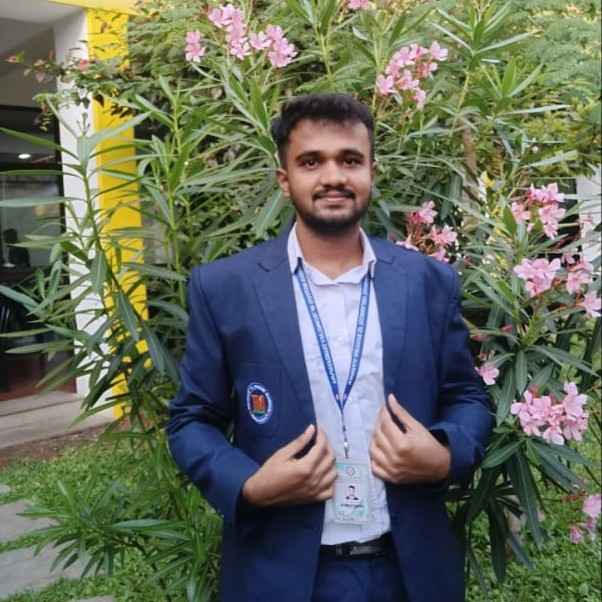

Available for opportunities
Building intelligent systems for a smarter future.
Hi, I’m Dileep K N — an AI & Machine Learning Engineer transforming complex data into dependable, real-world solutions.
Predict Perceive Optimize

AI SYSTEM ONLINE
ENGINEERDILEEP K N
VERIFIED
Python
ML
Move your cursor
01 — About me
Data-driven thinking.
Human-centred impact.
I’m a passionate AI & ML Engineer who enjoys turning industrial challenges into practical, intelligent products.
My focus sits at the intersection of predictive maintenance, computer vision, data analytics and Industry 4.0. I work with a detail-oriented engineering mindset — from preparing data and training models to crafting useful deployment experiences.
Predictive intelligence Computer vision Industry 4.0
02 — Expertise
A practical AI toolkit.
Technologies and methods I use to move from raw data to meaningful outcomes.
Programming
Python · Java · C
Machine Learning
Random Forest · Decision Tree · Logistic Regression · Classification · Feature Engineering
Libraries
Pandas · NumPy · Scikit-learn · OpenCV · Matplotlib · Seaborn
Tools
Git · GitHub · Google Cloud · VS Code · Jupyter · Streamlit
03 — Journey
Experience & education.
TRITON · MYSURU
Machine Learning Intern
Applied machine learning workflows to real industrial use cases, contributing to data analysis, model development, and solution-focused experimentation.
Machine LearningData AnalysisPythonMAHARAJA INSTITUTE OF TECHNOLOGY THANDAVAPURA
B.E. Computer Science (AI & ML)
Developed a strong foundation in artificial intelligence, machine learning, programming, and modern software engineering practices.
CGPA 8.2 / 1004 — Selected work
Projects with purpose.
Practical systems designed around safety, reliability and intelligent decision-making.
01
PREDICT · PREVENT · PERFORM
FEATURED PROJECT 2025
Industrial Predictive Maintenance & Recommendation System
An intelligent platform that analyzes equipment conditions to forecast potential failures and surface actionable maintenance recommendations before disruption occurs.
PythonScikit-learnStreamlitData Analytics
View live demo 02
DRIVER ALERTNESS MONITOR
COMPUTER VISION 2025
Driver Drowsiness Detection
A real-time computer vision concept that monitors facial and eye cues to help identify driver fatigue and support safer journeys.
PythonOpenCVComputer Vision
View on GitHub 05 — Credentials
Learning without limits.
Google Cloud
Cloud Engineering
Professional certificationIBM
Artificial Intelligence Fundamentals
Professional certificationIUCEE
Global Expert Certification
Professional certification06 — Get in touch
Let’s build something
intelligent together.
Have a role, a collaboration, or an ambitious AI idea in mind? I’d love to hear about it.
dileepkumar37952@gmail.com